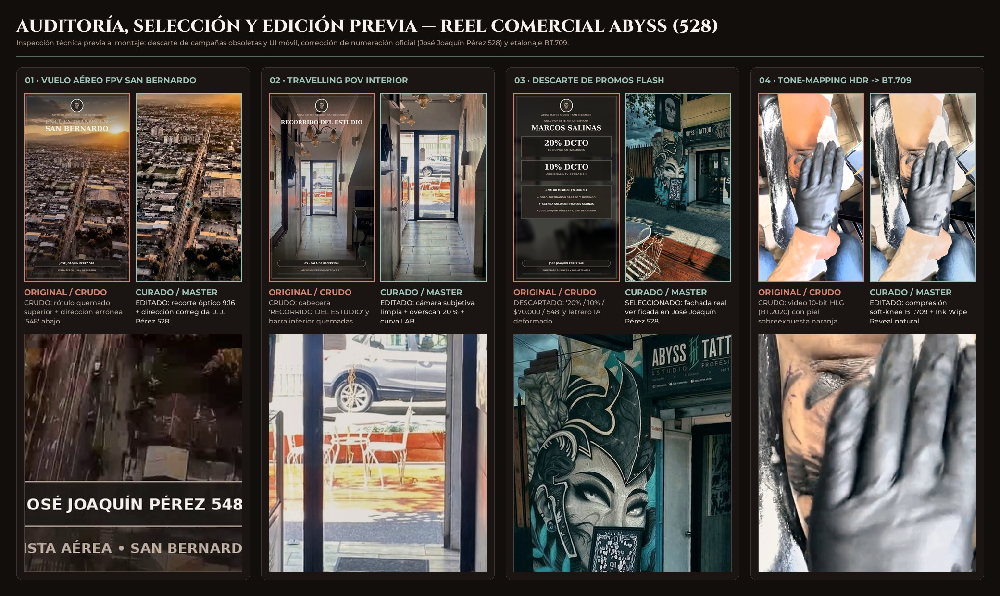
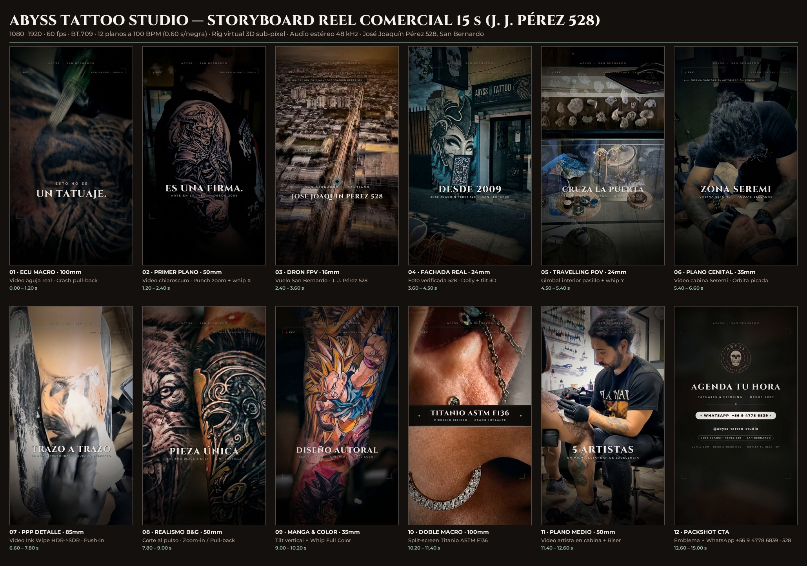

Spot publicitario vertical masterizado a 60 fps desde material real curado, recortado y etalonado en BT.709: 12 planos con rig de cámara virtual 3D sub-píxel, vuelo FPV de dron, fachada verificada en numeración 528, cabina Seremi, Ink Wipe Reveal, joyería de Titanio ASTM F136 y Packshot CTA directo.

